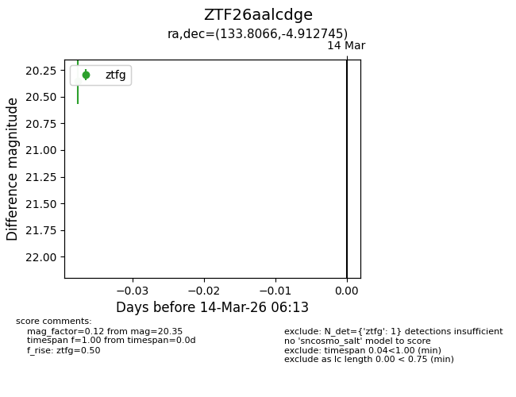
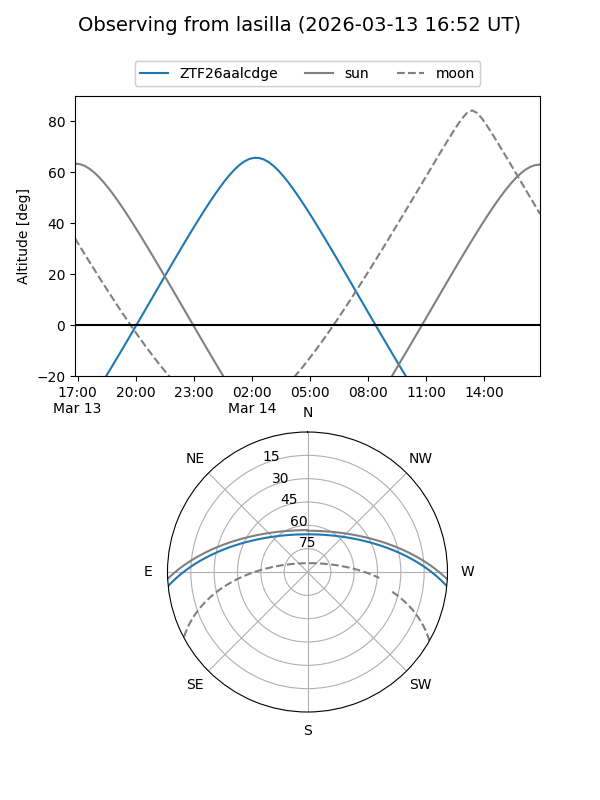
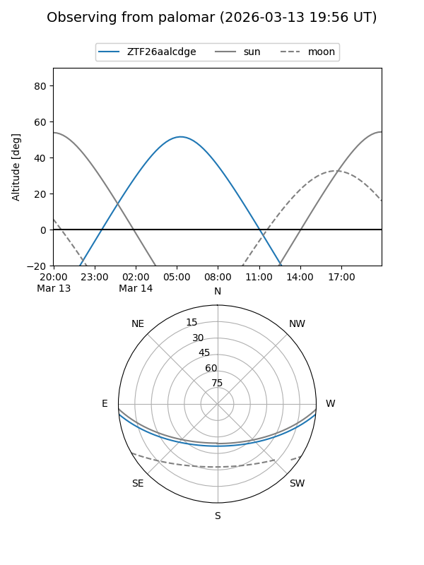

ZTF26aalcdge
Target ZTF26aalcdge at 2026-03-14 06:14
Aliases and brokers:
FINK: link
Lasair: link
ALeRCE: link
alt names
ZTF26aalcdge (ztf,fink_ztf)
Coordinates:
equatorial (ra, dec) = 133.8066,-4.91275
equatorial (HMS+DMS) = 08:55:13.59,-04:54:45.88
galactic (l, b) = (232.8629,+24.64172)
Flags:
Photometry:
last ztfg=20.35
1 ztfg detections
Lightcurve

Visibility


Additional plots